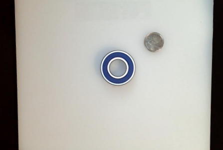
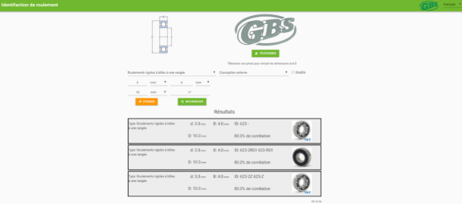

Mesuring Bearing Dimension With Webcam
This project was realized in my first year engineering design class. The mandate from the client was to create a system/software to quickly identify bearings in different wear condition. Making it easier for his employes and getting the customers out the door faster. My group came up with a vision system with an Excel database of the top 300 most common bearings.
The physical design is quite simple. All the green parts have been designed in Solidworks and 3D printed. The upright is adjusteble to allow bigger bearings to fit in the field of view of the webcam.
The webcam has an integrated ring light which help greatly the Python AI vision system to identify the edges of the bearing properly. I coded the entire project in Python for the backend and used Anvil (which also uses python) to create a simple and fast interface. Check out Anvil

The programe now takes in the image captured and put it through a couple manupilation to eliminate showdows and only focus on the quater and the bearing. The quater is used as a reference point, since the support is height adjustable the size of one pixel is not always the same ratio in mm. Because we know the physical dimension of the quater, a simple cross multiplication can give the dimension in mm of the inside and outside ring. 